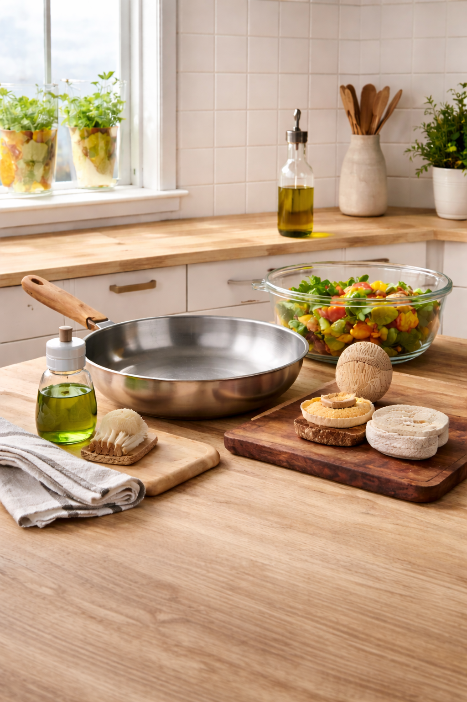
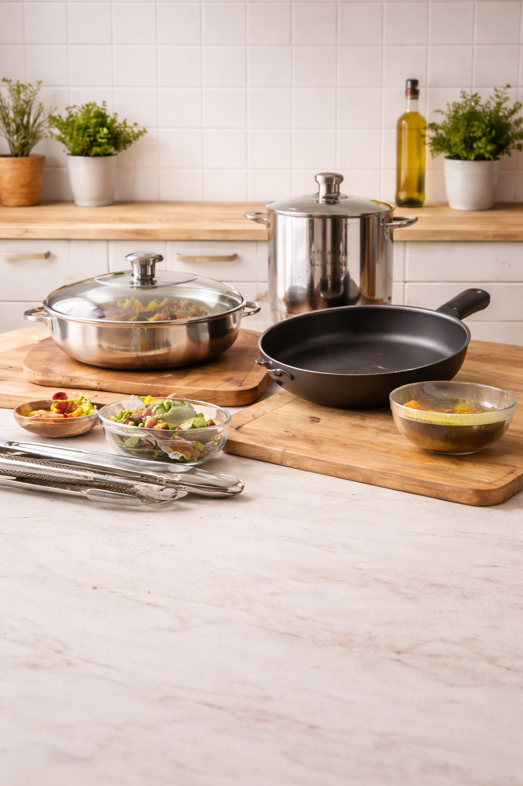
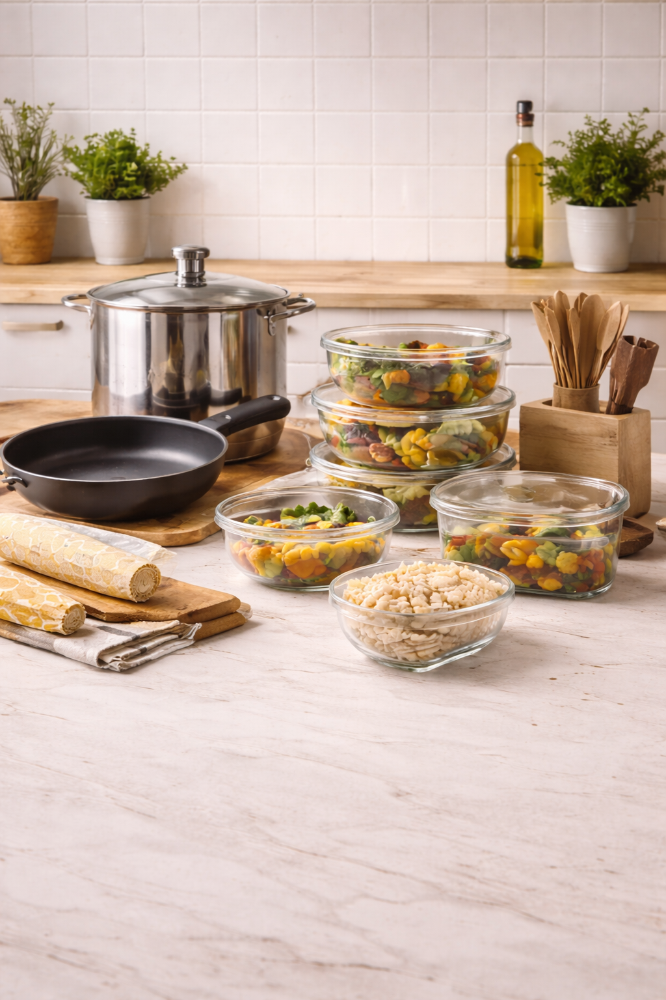
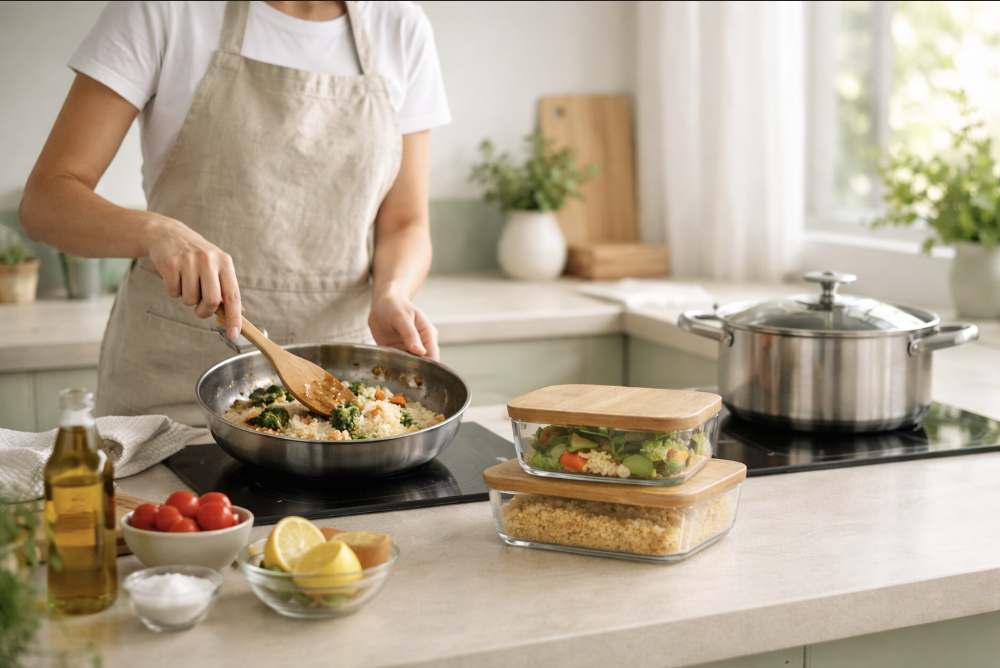

Des kits de cuisine pensés pour un quotidien plus sain
Notre produit
PurKit propose des kits regroupant plusieurs produits du quotidien, soigneusement sélectionnés comme des alternatives plus saines et tout aussi efficaces. Chaque kit est conçu pour remplacer facilement des produits courants, sans compliquer vos habitudes.
Les bienfaits
Les produits inclus dans les kits aident à réduire l’exposition aux microplastiques et à d’autres substances fréquemment présentes dans les produits traditionnels. Chaque kit est accompagné de guides simples et pratiques pour encourager de meilleures habitudes au quotidien.
L’avantage PurKit
Avec PurKit, plus besoin de passer des heures à comparer les options. Tout est déjà sélectionné et regroupé au même endroit pour vous faire gagner du temps et simplifier la transition vers des choix plus sains.

Produits
NOS KITS


Kit Avancé
Pour une cuisine plus régulière : plus d’options et une routine plus stable.
Acheter
Ressources
GUIDES & INFORMATIONS
Contaminants au quotidien
La cuisine est l’un des principaux environnements d’exposition à certains contaminants du quotidien. Microplastiques, matériaux synthétiques et revêtements peuvent, dans certaines conditions d’usage, contribuer à une exposition répétée. Comprendre ces sources permet d’adopter des alternatives simples qui font une réelle différence à long terme.
Microplastiques
L’exposition est fréquente et provient notamment du chauffage du plastique, de l’utilisation d’ustensiles et de planches en plastique, ainsi que de l’eau potable et de l’air intérieur. Des études récentes ont mis en évidence la présence de microplastiques dans le sang, les poumons, le placenta et le lait maternel, soulignant leur caractère omniprésent.
PTFE / PFAS
Certains revêtements antiadhésifs à base de PTFE peuvent se dégrader lorsqu’ils sont exposés à des températures élevées (environ 260 °C et plus) ou à une usure répétée, augmentant le risque de relargage de composés indésirables au fil du temps.
Notre approche
L’objectif n’est pas la perfection, mais la réduction de l’exposition lorsque des options réalistes existent. Le choix de matériaux plus durables, combiné à de bonnes pratiques d’utilisation et d’entretien, permet de limiter ces sources courantes sans complexifier le quotidien.

Guide d’instructions PurKit
Ce guide présente des consignes simples et concrètes pour utiliser et entretenir les éléments du kit PurKit. L’objectif est de cuisiner plus sainement, tout en préservant la performance et la durabilité des équipements au fil du temps.
- Poêle en acier inoxydable : Préchauffer jusqu’à l’apparition de légères perles d’eau, ajouter une quantité modérée de matière grasse, puis procéder à la cuisson.
- Poêle à revêtement céramique : Utiliser une chaleur douce à moyenne. Éviter les outils abrasifs ou métalliques.
- Contenants en verre : Laisser reposer 5 à 10 minutes avant de fermer. Fermer à la main, sans forcer.
- Planches à découper : Huile minérale (facultatif). Dédier une planche à la viande crue. Séchage complet à l’air (idéalement vertical).
- Brosse à vaisselle : Retirer l’excédent d’eau et laisser sécher rapidement pour limiter le développement bactérien.

Réduire l’exposition, simplement
Réduire l’exposition au quotidien ne passe pas par la perfection, mais par l’adoption de gestes simples, cohérents et durables. Intégrées progressivement, ces mesures contribuent à améliorer l’environnement intérieur sans alourdir les routines.
- Cuisine : éviter le plastique exposé à la chaleur. Privilégier verre, inox, céramique pour cuisson et stockage.
- Eau : filtration certifiée si possible. Favoriser bouilloires/carafes/gourdes sans plastique en contact avec l’eau chaude.
- Bouteilles : limiter l’usage unique. Opter pour des contenants durables (ex. acier inoxydable).
- Lessive : laver moins souvent les synthétiques, à froid, cycles doux, sacs capteurs de microfibres.
- Entretien ménager : limiter les aérosols, aérer, aspirateur HEPA, nettoyage humide plutôt qu’à sec.

Contact
Écris-nous
Adresse
Québec, Canada
Téléphone
+1 (000) 000-0000
info@purkit.com